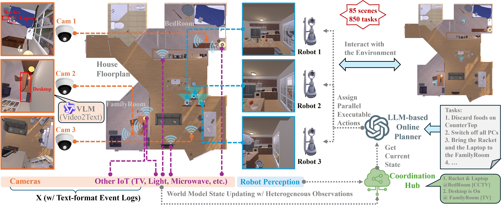
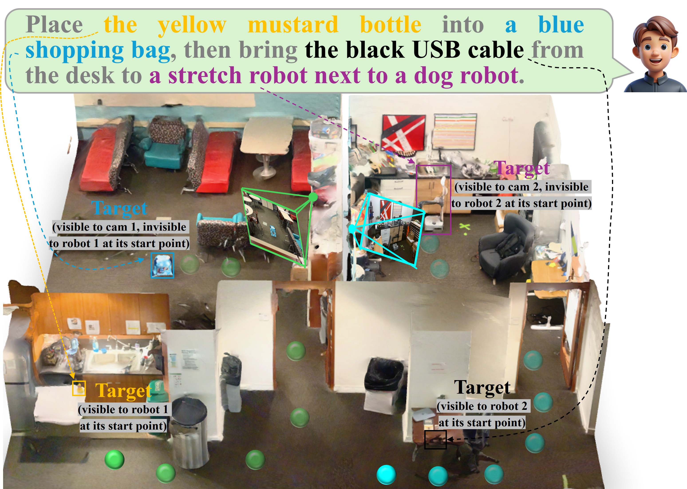
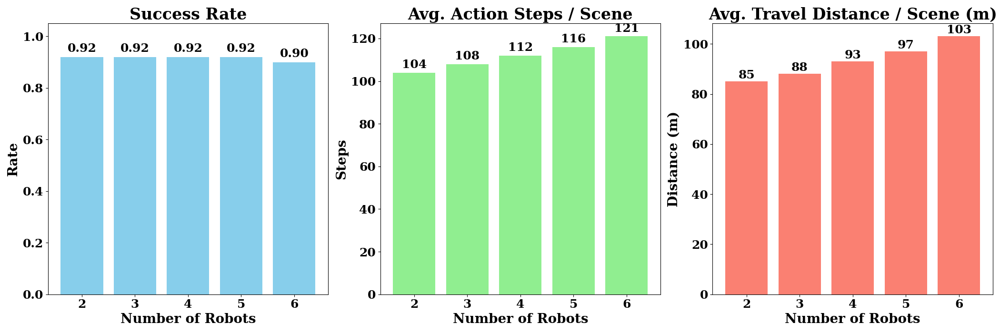
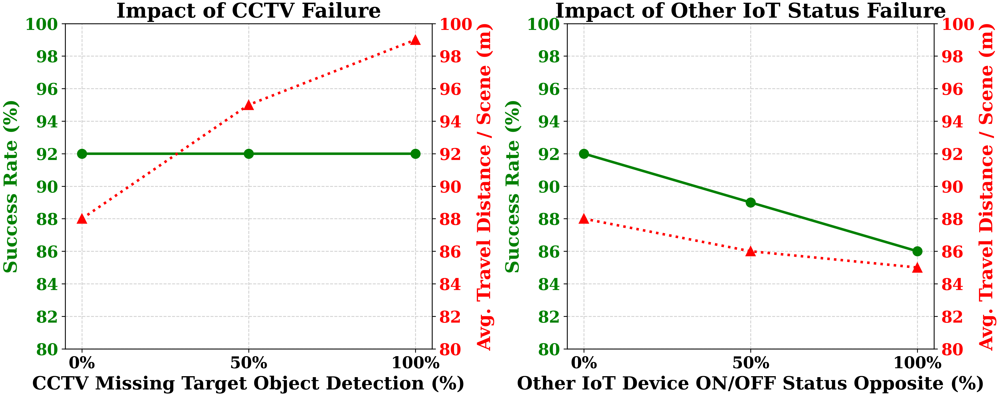

Abstract
Although robot-to-robot (R2R) communication improves indoor scene understanding beyond what a single robot can achieve, R2R alone cannot overcome partial observability without substantial exploration overhead or scaling team size. In contrast, many indoor environments already include low-cost Internet of Things (IoT) sensors (e.g., cameras) that provide persistent, building-wide context beyond onboard perception.
We therefore introduce IndoorR2X, the first benchmark and simulation framework for Large Language Model (LLM)-driven multi-robot task planning with Robot-to-Everything (R2X) perception and communication in indoor environments. IndoorR2X integrates observations from mobile robots and static IoT devices to construct a global semantic state that supports scalable scene understanding, reduces redundant exploration, and enables high-level coordination through LLM-based planning.
Extensive experiments across diverse settings demonstrate that IoT-augmented world modeling improves multi-robot efficiency and reliability, and we highlight key insights and failure modes for advancing LLM-based collaboration between robot teams and indoor IoT sensors.
Our IndoorR2X Framework

Our main contributions are threefold:
- Novel R2X Benchmark: We introduce IndoorR2X, the first indoor multi-robot benchmark that strictly enforces partial observability and integrates configurable IoT sensors to evaluate realistic team coordination.
- LLM-Driven Semantic Fusion: We propose a centralized framework that fuses onboard robot perception with ambient IoT signals into a shared global semantic state, enabling LLMs to plan parallel tasks without exhaustive physical exploration.
- Empirical & Real-World Validation: Extensive simulations and physical deployments demonstrate our framework significantly reduces path length, action steps, and LLM token costs, while exhibiting high resilience to missing sensor data.
Qualitative Demonstrations


Performance & Scalability


Citation
If you find this project useful for your research, please use the following BibTeX entry:
@misc{yang2026indoorr2xindoorrobottoeverythingcoordination,
title={IndoorR2X: Indoor Robot-to-Everything Coordination with LLM-Driven Planning},
author={Fan Yang and Soumya Teotia and Shaunak A. Mehta and Prajit KrisshnaKumar and Quanting Xie and Jun Liu and Yueqi Song and Wenkai Li and Atsunori Moteki and Kanji Uchino and Yonatan Bisk},
year={2026},
eprint={2603.20182},
archivePrefix={arXiv},
primaryClass={cs.RO},
url={https://arxiv.org/abs/2603.20182},
}